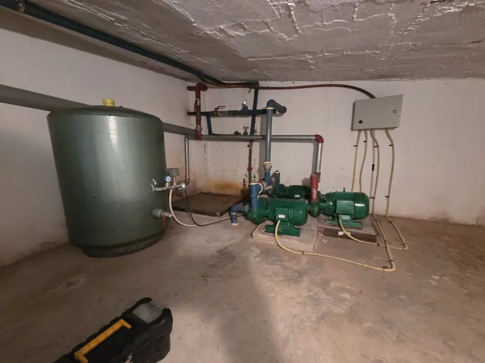
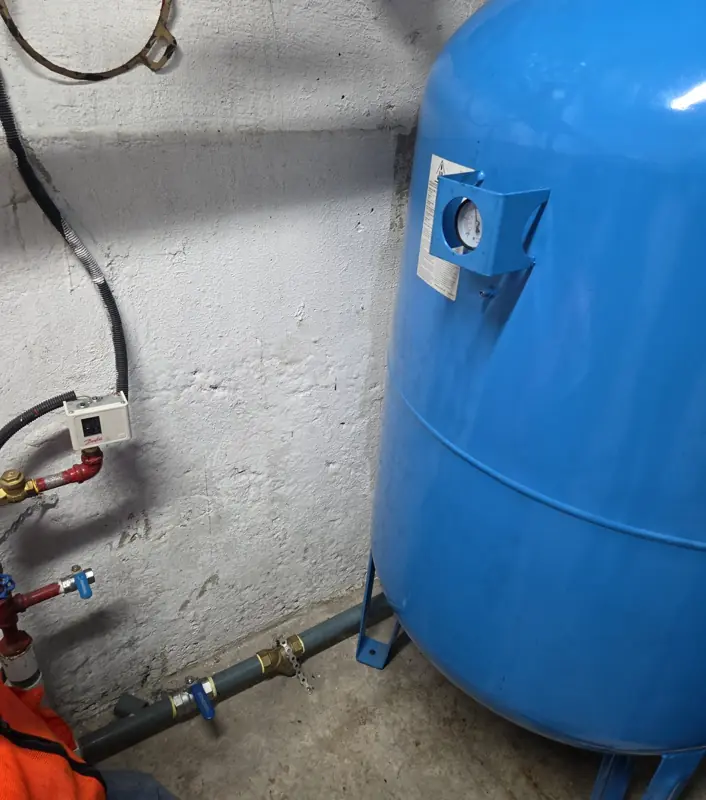
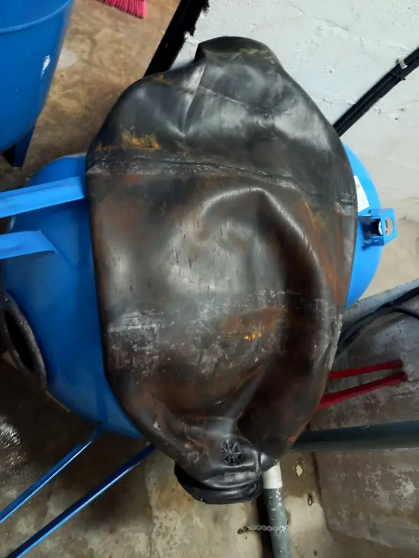

El tanque hidroneumático se quedó sin aire
La bomba se prende y se apaga a cada rato. En la terraza del Edificio Tivoli medimos 0 psi de precarga: el equipo se encendía y se apagaba en segundos.
Guía para administradores de edificios y conjuntos
La bomba se prende, pero el agua no llega a los pisos altos o sale sin fuerza. Antes de decidir qué reparar o cambiar hace falta medir. Aquí le contamos lo que hemos encontrado en edificios de Quito y qué puede observar usted sin tocar ningún equipo.

Con estas respuestas el técnico llega sabiendo qué buscar. Ninguna exige abrir el tablero ni mover nada.
No abra el tablero, no mueva el presostato y no reinicie la bomba varias veces seguidas. Una bomba que trabaja sin agua o que arranca a cada rato se daña, y el tablero tiene riesgo eléctrico.
Hallazgos de nuestros informes técnicos, ordenados según lo que nota el administrador y no por cuál es más frecuente. En cada edificio la causa se confirma midiendo.
La bomba se prende y se apaga a cada rato. En la terraza del Edificio Tivoli medimos 0 psi de precarga: el equipo se encendía y se apagaba en segundos.
El presostato es el interruptor que decide cuándo arranca la bomba. En el Edificio León 2000 estaba modificado y al límite de su ajuste, entre 50 y 70 psi, cuando el requerimiento indicado era llegar hasta 80 psi.
En el mismo edificio, una de las bombas hacía ruido y consumía 6,23 amperios, frente a los 2,5 de la otra.
En el Ventura Mall (centro comercial) encontramos un tanque con la membrana rota y un presostato averiado. Se reemplazó el tanque por uno de 500 litros.
En el Ventura Mall encontramos válvulas de pie sin canastilla y sedimentos en dos cisternas; en el Edificio Tivoli, sedimentos en la cisterna. Vea la limpieza técnica de cisternas.
Sin energía las bombas no funcionan. Si el agua se corta con cada apagón, hay que revisar el generador y el tablero de transferencia. Vea el mantenimiento de generadores eléctricos.
Las bombas se encendían a cada rato. No hizo falta cambiar el tanque.


Antes de recomendar un cambio medimos. Si un equipo está bien, se lo decimos y no se cambia.
No necesariamente. El problema puede estar en el tanque, en el presostato o en la succión. En la Torre Cantabria se revisó la membrana, se recuperó la carga de aire del tanque y se limpió el filtro Y, sin cambiar el tanque.
La visita técnica es gratuita. Después recibe el informe y una proforma por escrito.
Sí, atendemos emergencias 24/7.
Quito y valles.
Escríbanos el nombre del edificio, el sector y lo que está pasando. Si tiene la foto del manómetro o un video de la bomba, mejor. Coordinamos la visita técnica gratuita.